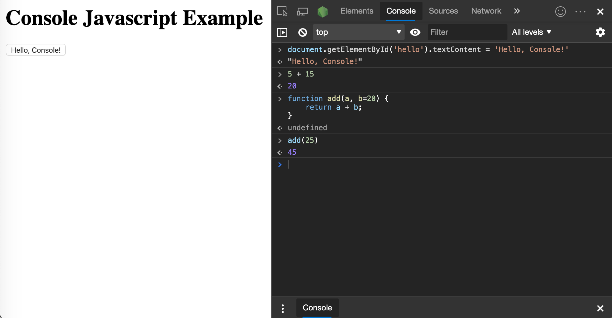

JavaScript
What is JavaScript?
JavaScript, also called JS, is a flexible and powerful language that is implemented consistently by various web browsers, making it the language for web development. JavaScript, HTML, and CSS are the core components of web technology. While HTML is responsible for structure and CSS is responsible for style, JavaScript provides interactivity to web pages in the browser. (The link has tutorials for beginners, Intermediate and advanced javaScript users.)
Console
- The console is a panel that displays important messages, like errors, for developers.
- In JavaScript, the console keyword refers to an object, a collection of data and actions, that we can use in our code.
- Keyowrds are words that are built into the JavaScript language, so the computer will recognize them and treats them specially.
- One action, or method, that is built into the console object is the .log() method. When we write console.log() what we put inside the parentheses will get printed, or logged, to the console.
Data Types
Data types are the classifications we give to the different kinds of data that we use in programming. In JavaScript, there are seven fundamental data types:
- Number: Any number, including numbers with decimals: 4, 8, 1516, 23.42.
- String: Any grouping of characters on your keyboard (letters, numbers, spaces, symbols, etc.) surrounded by single quotes: ' ... ' or double quotes " ... ". Though we prefer single quotes. Some people like to think of string as a fancy word for text.
- Boolean: This data type only has two possible values— either true or false (without quotes). It’s helpful to think of booleans as on and off switches or as the answers to a “yes” or “no” questio
- Null: This data type represents the intentional absence of a value, and is represented by the keyword null (without quotes).
- Undefined: This data type is denoted by the keyword undefined (without quotes). It also represents the absence of a value though it has a different use than null.
- Symbol: A newer feature to the language, symbols are unique identifiers, useful in more complex coding. No need to worry about these for now.
- Object: Collections of related data.
The first 6 of those types are considered primitive data types. They are the most basic data types in the language.
Arithmetic Operators
JavaScript has several built-in arithmetic operators, that allow us to perform mathematical calculations on numbers. These include the following operators and their corresponding symbols:
- Add: +
- Subtract: -
- Multiply: *
- Divide: /
- Remainder(modulo): %
The remainder operator, sometimes called modulo, returns the number that remains after the right-hand number divides into the left-hand number as many times as it evenly can: 11 % 3 equals 2 because 3 fits into 11 three times, leaving 2 as the remainder.
String Concatenation
When a + operator is used on two strings, it appends the right string to the left string. This process of appending one strong to another is called Concatenation.
Examples:
console.log('hi' + 'ya'); // Prints 'hiya'
console.log('wo' + 'ah'); // Prints 'woah'
console.log('I love to ' + 'code.')
// Prints 'I love to code.'
Notice in the third example we had to make sure to include a space at the end of the first string. The computer will join the strings exactly, so we needed to make sure to include the space we wanted between the two strings.
Properties
When you introduce a new piece of data into a JavaScript program, the browser saves it as an instance of the data type. Every string instance has a property called length that stores the number of characters in that string. You can retrieve property information by appending the string with a period and the property name:
console.log('Hello'.length); // Prints 5
Methods
Remember that methods are actions we can perform. JavaScript provides a number of string methods.
We call, or use, these methods by appending an instance with:
- a period (the dot operator)
- The name of the method
- opening and closing parentheses
Example:
console.log('hello'.toUpperCase()); // Prints 'HELLO'
console.log('Hey'.startsWith('H')); // Prints true
You can find a list of built-in string methogds here at this MDN article
Built-in Objects
Other built-in objects can be found here
The greatest thing about objects is that they have methods.
Example:
console.log(Math.random()); // Prints a random number between 0 and 1
To see all of the properties and methods on the Mathobect, take a look at the MDN article.
Variables
A variable is a container for a value. Information stores in variables, such as a username, account number, or even personalized greeting can then be found in memory.
Things you can do with variables such as:
- Create a variable with a descriptive name.
- Store or update information stored in a variable.
- Reference or "get" information stores in a variable.
Create a Variable: var
Example:
var myName = 'Arya';
console.log(myName);
// Output: Arya
- var, short for variable, is a JavaScript keyword that creates, or declares, a new variable.
- myName is the variable’s name. This is used with Camel Casing
- = is the assignment operator. It assigns the value ('Arya') to the variable (myName).
- 'Arya' is the value assigned (=) to the variable myName. You can also say that the myName variable is initialized with a value of 'Arya'.
- Use console.log(myName) to print "Arya" to the console.
A few rules for naming variables are:
- Variable names cannot start with numbers
- Variable names are case sensative
- Variable names cannot be the same as keywords for a list of keywords check out this MDN documentation.
To learn more about the varquirks check out this MDN documentation.
Create a Variable:let
The let keyword signals that the variable can be reassigned a different value.
Example:
let meal = 'Enchiladas';
console.log(meal); // Output: Enchiladas
meal = 'Burrito';
console.log(meal); // Output: Burrito
Another concept that we should be aware of when using let (and even var) is that we can declare a variable without assigning the variable a value.
Example:
let price;
console.log(price); // Output: undefined
price = 350;
console.log(price); // Output: 350
Create a Variable: const
const is short for the word constant. The way you declare a const variable and assign a valut to it follows the same structure, as let and var.
Example:
const myName = 'Gilberto';
console.log(myName); // Output: Gilberto
A const variable cannot be reassigned becuase it is a constant. If you try to reassign a const variable, you'll get a TypeError.
Constant variables must be assigned a value when declared. If you try to declare a const variable without a value, you’ll get a SyntaxError.
If you’re trying to decide between which keyword to use, let or const, think about whether you’ll need to reassign the variable later on. If you do need to reassign the variable use let, otherwise, use const.
Mathematical Assignment Operators
Bult-in mathematical assignment operators
- If you wanted to add a value and get the total you would use +=
- If you wanted to subtract a value and get the total you would use -=
- If you wanted to multiply a value and get the total you would use *=
- If you wanted to divide a value and get the total you would use /=
Example:
let x = 20;
x -= 5; // Can be written as x = x - 5
console.log(x); // Output: 15
let y = 50;
y *= 2; // Can be written as y = y * 2
console.log(y); // Output: 100
let z = 8;
z /= 2; // Can be written as z = z / 2
console.log(z); // Output: 4
The Increment Decremnt Operator
The increment operator (++) will increase the value of the variable by 1
Example:
let a = 10;
a++;
console.log(a); // Output: 11
The Decrement operator (--) will decrease the valur of the variable by 1
Example:
let b = 20;
b--;
console.log(b); // Output: 19
String Concatenation with Variables
The + operator ca nbe used to combine two strinf values even if those values are being stored in variables:
Example:
let myPet = 'armadillo';
console.log('I own a pet ' + myPet + '.');
// Output: 'I own a pet armadillo.'
String Interpolation
Template literals are used to insert or interpolate, variables into strings.
Example:
const myPet = 'armadillo';
console.log(`I own a pet ${myPet}.`);
// Output: I own a pet armadillo.
Notes:
- A template literal is wrapped by backticks ( ` ).
- Inside the template literal, you’ll see a placeholder, ${myPet}. The value of myPet is inserted into the template literal.
- When we interpolate `I own a pet ${myPet}.`, the output we print is the string: 'I own a pet armadillo.'
typeof operator
The typeof operator checks the value to its right and returns, or passes back, a string of the data type.
Example:
const unknown1 = 'foo';
console.log(typeof unknown1); // Output: string
const unknown2 = 10;
console.log(typeof unknown2); // Output: number
const unknown3 = true;
console.log(typeof unknown3); // Output: boolean
Comments
When collaborating it is better to leave comments for ourselves and other developers. As we write JavaScript, we can write comments in our code that will ignore as our program runs. These comments exist just for human readers.
Comments can explain what the code is doing, leave instructions for developers using the code, or add any other useful annotations.